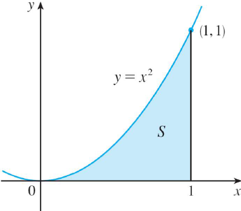

Implementar um programa computacional para estimar a área sob a parábola ∫[0;1] x² dx. (a região parabólica S ilustrada na Figura 1). Use retângulos para estimar a área desejada. Em primeiro lugar, a aproximação da região S deve utilizar retângulos e depois tomar o limite das áreas desses retângulos à medida que aumenta-se o número de retângulos.
Você deve considerar as extremidades a direita e a esquerda dos subintervalos e construir a tabela abaixo com os valores das áreas. Fazer análises dos seus resultados
| n (número de faixas) | Ln (extremidade a direita) | Ln (extremidade a esquerda) |
|---|---|---|
| 10 | ||
| 30 | ||
| 50 | ||
| 100 | ||
| 1000 |
Fazer um programa computacional para estimar a área da região que está sob o
gráfico da função abaixo , no intervalo [0,2].
A) Na estimativa da área, tome como pontos
amostrais os pontos médios, usando n subintervalos. Construir a tabela abaixo
com os valores das áreas. Fazer análises dos seus resultados.
B) Encontre uma
expressão para a área como um limite.
| n (número de faixas) | Ln (extremidade a direita) |
|---|---|
| 2 | |
| 4 | |
| 8 | |
| 10 |
Use a propriedade 8, descrita abaixo, para estimar a integral da função abaixo:
8. Se m <= M para a <= x <=b, então
m.(b-a) <= ∫[a;b] f(x)dx. <= M(b-a)
Resposta: